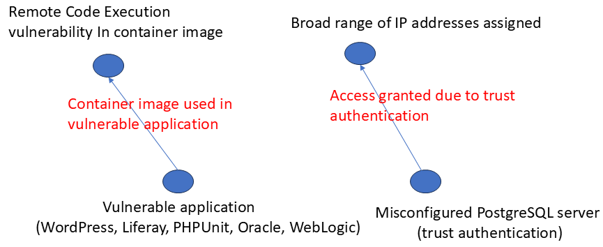
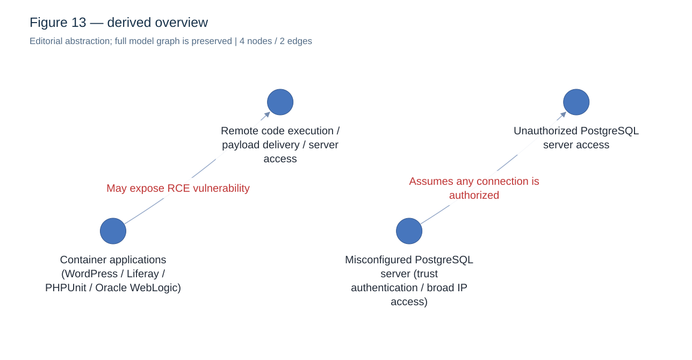

Trái: bài gốc (Bard). Phải: bản gom nhóm biên tập từ graph mô hình thay thế; cùng kịch bản, không phải cùng lần sinh.
Khác schema đầy đủ của repo; xem metadata · Ảnh tổng quan 4 nút/2 cạnh là bản gom nhóm để trình bày; output mô hình đầy đủ 15 nút/18 cạnh vẫn được giữ.


Mở graph tương tác · PNG đầy đủ · SVG · Prompt · Metadata · Toàn bộ
PNG tổng quan · Tổng quan tương tác và ánh xạ về source_nodes/source_edges